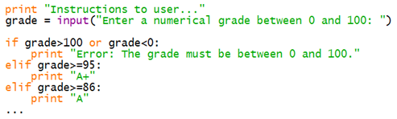
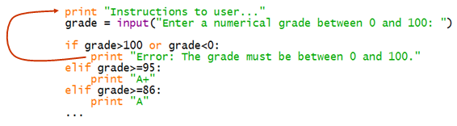

Until now our programs have been strictly sequential executing from top to
bottom. With the if statement we were able to select some statements to
execute and others to skip, but execution still flowed from top to bottom.
However some processing requires us to go back up in a program
to repeat sections of code a second time (or a third and and a fourth and so
on).
Think back to this bit of code from the previous module:

It instructs the user to enter a grade to convert and then had a long section testing the entered value to calculate the corresponding letter grade. We discovered that between the input and selection we needed to test the grade to ensure it was valid. If it was invalid we were able to avoid processing it and producing mistaken output, and even to explain their error to the user, but we were not able to give them the chance to reenter the value. What we need is some way to go back up and give them a second chance as shown by the red arrow below.

So far though we don't have a statement or construct that lets us "go back up" if the grade is invalid and repeat the execution of some code. This is what repetition constructs enable us to do: to repeat code as many times as necessary.